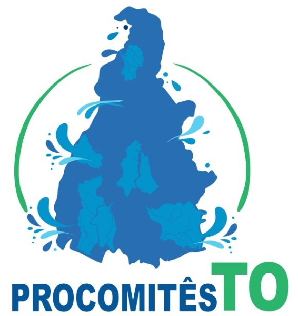

Sobre o CBHTO
Os Comitês de Bacias Hidrográficas do Estado do Tocantins reunidos em um só lugar.
O CBHTO é o portal dos Comitês de Bacias Hidrográficas instalados no Tocantins. Aqui cada comitê publica sua história, composição, atas, resoluções, pareceres das câmaras técnicas, notícias e registros fotográficos, garantindo transparência e acesso à informação para toda a sociedade.
Hoje o estado conta com sete comitês: Lago de Palmas (CBHLP), Rio Formoso (CBHRF), Rios Lontra e Corda (CBHLC), Rio Manuel Alves (CBHRMA), Rio Palma (CBHRP), Rios Santo Antônio e Santa Tereza (CBHSAST) e o mais novo, Rios Coco e Caiapó (CBHRCC).
Os comitês integram o Sistema Nacional de Gerenciamento de Recursos Hídricos, criado pela Lei Federal nº 9.433/1997, e o Sistema Estadual instituído pela Lei nº 1.307/2002, que dispõe sobre a Política Estadual de Recursos Hídricos do Tocantins.
Os comitês
O que é um comitê de bacia hidrográfica
Um comitê de bacia hidrográfica é um colegiado formado por representantes do poder público, dos usuários de água e da sociedade civil organizada de uma mesma bacia. É conhecido como o "parlamento das águas", porque é ali que se debatem e se decidem os rumos do uso da água na região.
O que o comitê faz
- Promove o debate sobre as questões relacionadas aos recursos hídricos da bacia;
- Arbitra, em primeira instância administrativa, os conflitos pelo uso da água;
- Aprova e acompanha a execução do Plano de Recursos Hídricos da bacia;
- Propõe mecanismos e valores para a cobrança pelo uso da água;
- Acompanha a situação da bacia e divulga informações à sociedade.
Como funciona
As decisões são tomadas em plenário, nas reuniões ordinárias e extraordinárias, que são públicas. As câmaras técnicas preparam estudos e pareceres que subsidiam essas decisões, e a diretoria coordena os trabalhos do comitê durante o mandato.
Dúvidas frequentes
Apoio técnico aos comitês

Desde junho de 2026 os comitês contam com o apoio técnico, administrativo e operacional do Procomitês Tocantins, projeto do Instituto Federal do Tocantins (IFTO) em parceria com a Secretaria do Meio Ambiente e Recursos Hídricos (SEMARH) e a FAPTO.
O apoio inclui a organização das reuniões ordinárias, capacitações dos membros, comunicação e a participação dos comitês em encontros nacionais.